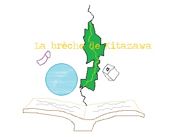

La brèche de Kitazawa

0/ Précédemment, dans Léopold is Away
1/ Exotisme
2/ Un GÉNIE monsieur !
3/ Chef des soldats
4/ Vive le Roy !
5/ Le commencement de l’épopée
6/ Le pouvoir royal
7/ Ça chauffe !
8/ Le cirque
9/ Salade tomates oignons
10/ À la recherche du savoir
11/ Le vrai du FOH
12/ Toujours plus loin
13/ Douce nuit
14/ Bro gozh ma zadoù
15/ L’origine des maux
16/ Titanic
17/ Le voyage continu
18/ 3ème Guerre Mondiale
19/ Infiltration ! Mondialisation !
20/ La lutte finale
21/ L’enfer sur Terre
22/ Destruction de l’apocalypse
23/ Rééquilibrage des forces
Retourner à la sélection des tomes